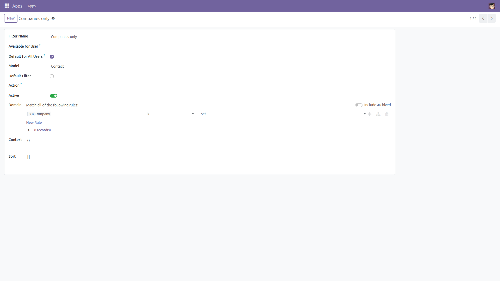
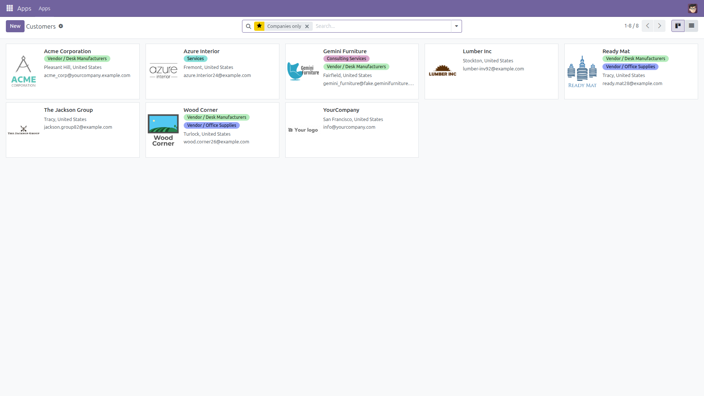

Global Default Saved Filter
One shared filter, default for everyone.
Odoo's favorites menu makes Use by default and Share with all users
mutually exclusive, so the standard advice is to duplicate the same filter for every single user.
This module adds a Default for All Users flag on shared filters instead — set it once,
and everyone gets the right view on login. Free and open source (LGPL-3), Odoo 14.0 through 19.0.
- No per-user duplication — one shared filter serves the whole database.
- Personal choice always wins — a user's own default filter overrides the global one.
- No conflicting defaults — flagging a new filter demotes the previous one automatically.
- Nothing left behind — untick the flag and Odoo behaves exactly as before.
Screenshots

Tick "Default for All Users" on any shared filter — the flag only appears on shared filters, never personal ones.

Every user who has not chosen a personal default now opens the view with that filter already applied.
Installation
- Open Apps, remove the default "Apps" filter if needed, and search for Global Default Saved Filter.
- Click Install. Only standard Odoo
base is required.
Configuration
- None — the flag is available on shared filters immediately after installation.
Usage
- Save a filter from the favorites menu with Share with all users ticked.
- Enable developer mode, open Settings → Technical → User-defined Filters, select it and tick Default for All Users.
- Users without a personal default now open that view with the filter applied. Flagging another filter for the same model automatically demotes this one.
Version notes
Odoo 19.0 stores filter sharing in user_ids (many2many) rather than user_id; the module handles both shapes automatically.
License: LGPL-3 · Source on GitHub · Issues and contributions welcome.